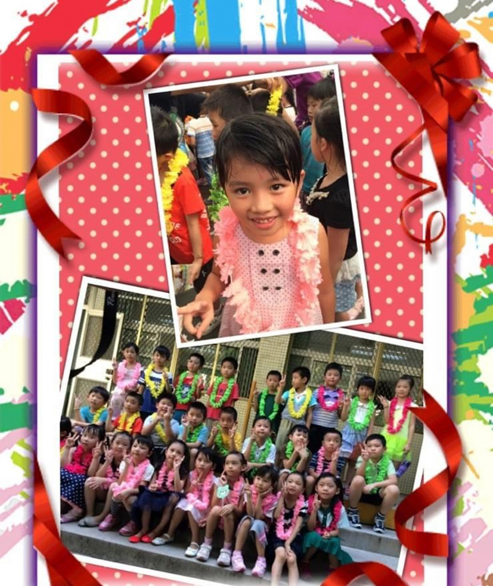
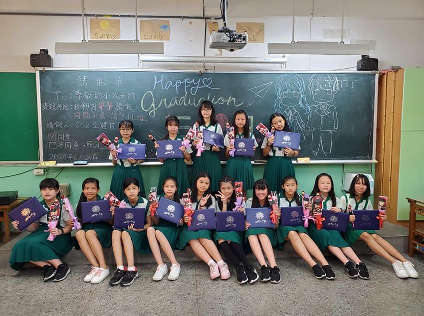

每年六月鳳凰花開時，也是離情依依的時刻，看著莘莘學子離開學校，展開人生另一段旅程，今年之所以特別有感觸，是因為我的寶貝女兒小學畢業啦！
遙想當年那個抱在手中，吸著奶嘴的小娃娃，從會翻身到會跑會跳，從牙牙學語的叫爸比，直到會唱第一首歌，一切的一切都歷歷在目，怎麼一轉眼，妳已經是一個亭亭玉立，快跟媽咪一樣高的小少女了。
還記的小一新生入學的第一天，爸比牽著妳的小手，到了學校，妳緊張的不肯鬆開手，要爸比陪妳一起進教室，坐在妳旁邊，貼心的導師，為了化解妳的不安，同意讓爸比在教室的後排待著，還好老師親切又溫柔，同學熱情又活潑，很快的妳似乎適應了，老師用眼神示意我可以離開，默默走出教室後，看著妳開心的跟同學嘻嘻哈哈的身影，瞬間察覺，原來捨不得放手的是我，原來是我享受著妳的依賴。
|  |
低年紀的課業不重，每天看妳期待著去上學，回家急著跟我們分享在學校的點點滴滴，聽妳嘰嘰喳喳地說著，今天跟同學玩了鬼抓人、紅綠燈、溜滑梯，還有老師帶著你們玩老鷹抓小雞等遊戲，我們很欣慰妳校園生活是如此豐富，單純而美好，親愛的孩子，爸比希望你盡情享受這一刻，因為我知道，成長的道路，會越來越不輕鬆啊！
中年級的妳在課業上，雖然比起低年紀時稍微加重了些，可對妳來說，似乎游刃有餘，不用我們擔心，但在體育項目，就不是那麼在行，還記得有天回家時，妳沮喪的跟我們說，大隊接力沒被選上，拔河也沒能參加，所有賽事都沒妳的份，媽咪跟妳說沒關係，每個人的強項本來就不一樣，妳可以在場邊用妳的大嗓門，熱情地幫同學加油，當個稱職的啦啦隊，樂觀的妳聽進去了，在妳的帶領下，場邊的啦啦隊，果然很吸睛，爸比希望妳記住，天生我材必有用，雖然妳跑步不快，誰知妳竟會是水中的美人魚呀！
轉眼間來到了高年級，一切都變得很不一樣，妳開始有了只跟媽咪分享的小秘密，開始有了欣賞的男孩，跟我們講話開始變得不耐煩，開始頂嘴，開始……..學校3天2夜的畢旅，第一次沒有我們在身邊，看著妳開心的在臉書上打卡，一張張跟同學玩瘋的合照，我知道小女孩長大了，我們也該試著放手讓妳飛，這分寸的拿捏，也是我和媽咪要學習的課題啊！
畢業的日子接近倒數，看妳珍惜著和同學相處的每一天，我也跟著感傷，我想告訴妳的是，畢業不是結束，而是另一段旅程的開始，妳應該要在剩下的這些天，好好的跟老師和同學們說聲謝謝，感謝他們讓妳的校園生活多采多姿，不得不說，妳們這世代真的很幸福，發達的通訊軟體，可以讓妳們隨時保持連絡不失聯，最後爸比祝福妳鵬程萬里~畢業快樂啦！
|  |